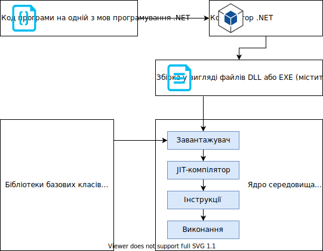

graph TD; C-->C++; C++-->Java; C++-->C#;
Тема 1. Вступ до курсу
Keywords
програмування, алгоритм, мова програмування, програма, програмне забезпечення, розробка, блок-схеми, інформатика, додатки, задачі
1.1. Загальні категорії та поняття програмування
Note
Презентація до заняття:
Перед початком вивчення програмування варто розглянути та розібрати базові поняття та категорії. Дамо визначення понять: алгоритм, задача, програмування, мова програмування, програма, програмне забезпечення, розробка програмного забезпечення.
Програмування – розробка програм за допомогою мов програмування.
Мова програмування – це формальна система знаків, що призначена для написання програм, зрозуміла для виконавця (комп’ютера).
Програма (program, routine) — впорядкована послідовність команд (інструкцій) комп’ютера для розв’язання задачі.
Програмне забезпечення (software) — сукупність програм обробки даних та необхідних для їх експлуатації документів. Програми призначені для машинної реалізації завдань (Задач). Терміни завдання і застосування (програма) мають дуже широке вживання в контексті інформатики і програмного забезпечення.
Завдання або задача (problem, task) — проблема, що підлягає вирішенню.
Застосування або програма (application) — програмна реалізація на комп’ютері рішення задачі.
Розробка програмного забезпечення (англ. software engineering, software development) — це рід діяльності (професія) і процес, спрямований на створення і підтримку працездатності, якості та надійності програмного забезпечення, використовуючи технології, методологію та практики з інформатики, управління проектами, математики, інженерії та інших сфер знань.
Алгоритм (Algorithmi, від імені перського математика IX ст. аль-Хорезмі) — система правил виконання обчислювального процесу, що обов’язково приводить до розв’язання певного класу задач після скінченного числа операцій. При написанні комп’ютерних програм алгоритм описує логічну послідовність операцій. Для візуального зображення алгоритмів часто використовують блок-схеми. Засоби швидкої розробки додатків (RAD) дозволяють створити програмний продукт, що складається з ряду застосувань, що дозволяють користувачам вводити дані в таблиці або редагувати вже існуючі дані, аналізувати введені дані і представляти їх у більш зручному для сприйняття вигляді - графіків, зведених таблиць або звітів (у тому числі у вигляді “паперових” документів).
1.2. Коротка історія мов програмування та виникнення C
1.2.1. Парадигми програмування
Усе програмування прийнято поділяти на два основних види:
Декларативне.
Імперативне.
Декларативне програмування — термін з двома різними значеннями. Згідно першому визначенню, програма «декларативна», якщо вона описує щось, а не як його створити. Наприклад, веб-сторінки на HTML декларативні, оскільки вони описують що повинна містити сторінка, а не як відображати сторінку на екрані. Цей підхід відрізняється від мов імперативного програмування, що вимагають від програміста вказувати алгоритм для виконання.
Згідно другому визначенню, програма «декларативна», якщо вона написана на виключно функціональній, логічній або константній мові програмування.
Імперативне програмування — парадигма програмування, згідно з якою описується процес отримання результатів як послідовність інструкцій зміни стану програми. Подібно до того, як з допомогою наказового способу в мовознавстві перелічується послідовність дій, що необхідно виконати, імперативні програми є послідовністю операцій комп’ютеру для виконання.
Парадигма програмування — це спосіб мислення розробника програми. Мова програмування може підтримувати або не підтримувати ту чи іншу парадигму. В першому випадку застосування парадигми стає зручним, тобто простим, безпечним і ефективним. Ми розглянемо три основних наказових парадигми — процедурне, об’єктне (модульне) і об’єктно-орієнтовне (ієрархічне) програмування.
1.2.2. Процедурне програмування
Процедурне програмування подає програму у вигляді набору алгоритмів, для оформлення яких можуть застосовуватися іменовані програмні блоки — процедури і функції. В останньому випадку передбачається наявність механізмів передачі параметрів і поверненні результату.
Спочатку процедурне програмування користувалося довільними засобами керування, в тому числі, переходом за міткою — одним з найбільш вживаних операторів керування в Фортрані.
До мов процедурного програмування відносяться Fortran, Cobol, Pascal, Basic, та інші.
В 1968 році голландський вчений Е. Дейкстра вперше звернув увагу на проблеми, що виникають у програмах з неконтрольованими переходами, в 1970 році проголосив новий напрямок, який він назвав структур(ова)ним програмуванням.
Структурне програмування — це варіант процедурного, що вживає три типи структур керування: послідовне виконання дій, розгалуження і цикл. Не дивно, що Фортран не підтримував цю парадигму — в наборі його засобів не було циклів за умовами. Починаючи з Алголу, а особливо в Паскалі, цикли стають основним засобом організації обчислень в програмі.
Автор Паскалю, професор Н. Вірт, відібрав до створюваної ним мови програмування лише прості в поясненні і легкі в реалізації конструкції. Завдяки сильній типізації програми в Паскалі відзначаються високою надійністю, вони мобільні завдяки закладеній в них концепції Паскаль-машини, їх легко читати і розуміти завдяки дисципліні програмування, продиктованої вжитою парадигмою.
Але разом з цим застосування Паскалю гальмувалося саме складністю виходу за межі віртуальної машини, потребою ефективного використання наявної апаратури. Головним критерієм, вжитим Б.Керніганом і Д.Річі до створеної ними мови С, стала саме гнучкість використання особливостей конкретної апаратури і ефективність виконання програм.
1.2.3. Об’єктне (модульне) програмування
Процедурна парадигма віддала належне алгоритмічній компоненті програмування. Але з ростом обсягу програм і складності даних з’явилася нова проблема структурної організації даних, найбільш ємко висловлена Віртовською формулою алгоритми + структури даних = програми.
Поняття модуля як абстракції даних було вперше запропоноване Парнасом у 1972 році, правда на той час уже існувала мова програмування Симула 67, в якій використовувалася парадигма об’єктів. У найбільш повному виді поняття абстракції даних було реалізоване в мові програмування Модула-2.
Головна ідея полягає в забезпеченні доступу до даних, не залежному від їх конкретного представлення. Самі дані і програми їх обробки вбудовуються (інкапсулюються) в окремій одиниці програми.
1.2.4. Об’єктно-орієнтовне програмування
Об’єктно-орієнтована парадигма наділила класи ієрархією.
Об’єктно-орієнтоване програмування за метафорою Б.Страуструпа, автора С++ — однієї з найпопулярніших мов об’єктно-орієнтованого програмування, — це високоінтелектуальний синонім доброго програмування. Дійсно, нові парадигми програмування з’являються не так часто, не частіше однієї в десятиліття. Той факт, що об’єктно-орієнтована парадигма успішно використовується протягом 20 років, сам по собі служить вагомим підтвердженням її життєздатності.
Алгоритми, реалізовані в процедурному програмуванні, надто конкретні. Будь-яка модифікація — це вже новий алгоритм і таким чином кількість процедур і функцій, що знаходяться у використанні, надмірно зростає. Модульне програмування групує алгоритми в модулі, одночасно інкапсулюючи структури даних. Тепер залишається зробити наступний крок — побудувати ієрархію модулів або класів.
Таких ієрархій може бути дві. Перша з них — бути частиною чогось. Наприклад, грань є частиною многогранника, ребро — частиною грані, вершина — частиною ребра. Інша ієрархія — бути узагальненням або конкретизацією.
Наприклад, овал і многокутник служать конкретизацією плоскої фігури, коло — конкретизацією овалу, чотирикутник — конкретизацією многокутника, подальшими конкретизаціями чотирикутника можуть служити паралелограм, прямокутник, ромб, квадрат. Той факт, що квадрат, ромб, прямокутник є повноцінними паралелограмами дозволяє їм користуватися усіма програмними засобами, створеними для паралелограма, паралелограм в свою чергу є повноцінним чотирикутником і так далі. Цей принцип, відомий під назвою reusable — знову вживаний — став одним з найважливіших досягнень об’єктно-орієнтованої парадигми. Знову вживаючи вже існуюче програмне забезпечення в більш конкретизованих умовах, ми дописуємо лише ту його частину, яка стосується особливостей наявної конкретизації. Цей принцип дістав назву programming by difference або дописування програм.
І, нарешті, об’єктно-орієнтована парадигма доводить до логічної завершеності принцип моделювання реального світу, а точніше тієї його частини, абстракцією якої служить програма. При цьому підході програма складається з об’єктів, що відповідають реальним поняттям або предметам. Виконання програми зводиться до взаємодії об’єктів, яке служить абстракцією реальної взаємодії їх прототипів. Все це разом забезпечило об’єктно-орієнтованому підходу беззаперечне лідерство в галузі розробки програм.
Сьогодні в сімействі мов об’єктно-орієнтованого програмування три найбільш відомих представника: С++, Java і C# ( читається Сі шарп ). С++ і сьогодні залишається визнаним лідерів в розробці великих і складних програмних систем. Java і C# виросли з С++.
1.3. Еволюція мови програмування C
1.3.1 Створення ООП та C++
До кінця 1970-х розмір проектів став наближатися до критичного, при перевищенні якого методика структурного програмування і мова С “опускали руки”. Тому стали з’являтися нові підходи до програмування, що дозволяють вирішити цю проблему. Один з них отримав назву об’єктно-орієнтованого програмування (ООП). Використовуючи ООП, програміст міг справлятися з програмами набагато більшого розміру, ніж раніше. Але проблема полягала у тому, що С, найпопулярніша на той час мова, не підтримувала ООП. Бажання працювати з об’єктно-орієнтованою версією мови С врешті-решт і привело до створення C++.
Мова C++ була розроблена Бьорном Страуструпом (Bjarne Stroustrup) в компанії Bell Laboratories (Нью-Джерсі), роком створення вважається 1979-й. Спочатку творець нової мови назвав її “С з класами”, але в 1983 році це ім’я було змінене на C++. C++ повністю включає елементи мови С. Таким чином, С можна вважати фундаментом, на якому побудований C++. Більшість доповнень, які Страуструп вніс до С, були призначені для підтримки об’єктно-орієнтованого програмування. По суті, C++ - це об’єктно-орієнтована версія мови С. Створюючи С++ на основі С Страуструп забезпечив плавний перехід багатьох програмістів на ООП.
Замість необхідності вивчати абсолютно нову мову, С-програмістові досить було освоїти лише нові засоби, що дозволяють використовувати переваги об’єктно-орієнтованої методики.
Впродовж 1980-х років C++ інтенсивно розвивалася і на початок 1990-х вже була готовп для широкого використання. Зростання її популярності носило вибухоподібний характер, і до кінця цього десятиліття вона стала найбільш використовуваною мовою програмування. В наші дні мова C++ як і раніше має безперечну перевагу при розробці високопродуктивних програм системного рівня.
1.3.2 Internet та поява мови Java
Наступним рівнем на сходах прогресу мов програмування стала мова Java, яка спочатку називалася Oak (у перекладі з англ. “дуб”). Робота над її створенням почалася в 1991 році в компанії Sun Microsystems. Основною рушійною силою розробки Java був Джеймс Гослінг (James Gosling).
Java - це структурна об’єктно-орієнтована мова програмування, синтаксис і принципи якої “родом” з C++. Своїми новаторськими аспектами Java зобов’язана не стільки прогресу в мистецтві програмування (хоча і це мало місце), скільки змінам в комп’ютерному середовищі. Ще до настання ери Internet більшість програм писалися, компілювалися і призначалися для виконання з використанням певного процесора і під управлінням конкретної операційної системи. Не дивлячись на те що програмісти завжди прагнули робити свої програми так, щоб їх можна було застосовувати неодноразово, можливість легко переносити програму з одного середовища в іншу не була ще досягнута, до того ж проблема переносимості постійно вікладалися, вирішувалися ж більш насущні проблеми. Проте з появою всесвітньої мережі Internet, в якій виявилися зв’язаними різні типи процесорів і операційних систем, стара проблема портативності заявила про себе вже в повний голос. Для її вирішення знадобилася нова мова програмування, і нею стала Java.
Цікаво відзначити, що, хоча єдиним найбільш важливим аспектом Java (і причиною швидкого визнання) є можливість створювати на ній кросплатформений (сумісний з декількома операційними середовищами) переносимий програмний код, вихідним імпульсом для виникнення Java стала не мережа Internet, а наполеглива потреба у незалежній від платформи мові, яку можна було б використовувати в процесі створення програмного забезпечення для вбудованих контролерів. У 1993 році стало очевидним, що проблеми міжплатформеної переносимості, що чітко виявилися при створенні коду в вбудованих контролерів, також виявилися актуальними при спробі написати код для Internet. Адже Internet - це величезне комп’ютерне середовище, в якому “мешкає” безліч комп’ютерів різних типів. І виявилось, що одні і ті ж методи вирішення проблеми переносимості в малих масштабах можна успішно застосувати і до набагато більших, тобто в Internet У Java переносимість досягається за допомогою перетворення вихідного коду програми в проміжний код, що іменується байт-кодом), тобто машинно-незалежний код, що генерується Java-компілятором. Байт-код виконується віртуальною машиною Java (Java Virtual Machine - JVM) - спеціальною операційною системою. Отже, Java-программа могла б працювати в будь-якому середовищі, де доступна JVM. А оскільки JVM відносно проста для реалізації, вона швидко стала доступною для великої кількості середовищ.
Використання Java-програмами байт-коду радикально відрізняло їх від С- і С++-програм. Якщо С/С++-программу потрібно виконати в іншій системі, її необхідно перекомпілювати в машинний код, відповідний цьому середовищу. Отже, аби створити С/С++-програму, призначену для виконання в різних середовищах, необхідно мати декілька різних виконуваних (машинних) версій цієї програми. Це було непрактично і дорого. І навпаки, використання для виконання Java-программ проміжної мови було елегантним і рентабельним рішенням. Саме це рішення було адаптоване для мови С#.
1.3.3. Виникнення C
Розробники Java успішно вирішили багато проблем, пов’язаних з переносимістю в середовищі Internet, але далеко не всі. Одна з них - міжмовна можливість взаємодії (cross-language interoperability) програмних і апаратних виробів різних постачальників, або багатомовне програмування (mixed-language programming). В разі вирішення цієї проблеми програми, написані на різних мовах, могли б успішно працювати одна з іншою. Така взаємодія необхідна для створення великих систем з розподіленим програмним забезпеченням (ПЗ), а також для програмування компонентів ПЗ, оскільки найціннішим є компонент, який можна використовувати у широкому діапазоні комп’ютерних мов і операційних середовищ.
Крім того, в Java не досягнута повна інтеграція з платформою Windows. Хоча Java-програми можуть виконуватися в середовищі Windows (за умови встанолення віртуальної машини Java), Java і Windows не є міцно зв’язаними середовищами. А оскільки Windows - це найбільш широко використовувана операційна система в світі, відсутність прямої підтримки Windows - серйозний недолік Java.
Аби задовольнити ці потреби, Microsoft розробила мову С#, С# була створена в кінці 1990-х років і стала частиною спільної .NET-стратегії Microsoft. Вперше вона побачила світло як альфа-версія в середині 2000 року. Головним архітектором С# був Андерс Хейлсберг (Anders Hejlsberg) - один з провідних фахівців в області мов програмування, що отримав визнання у всьому світі. Досить сказати, що в 1980-х він був автором успішного продукту Turbo Pascal, витончена реалізація якого встановила стандарт для всіх майбутніх компіляторів.
Рис. 1.1. Розвиток мов програмування C/C++/Java/C#
С# безпосередньо пов’язаний із С, C++ і Java. І це не випадково. Ці три мови - найпопулярніші і найулюбленіші мови програмування в світі. Більш того, майже всі професійні програмісти сьогодні знають С і C++, і більшість знає Java. Оскільки С# побудований на міцному, зрозумілому фундаменті, то перехід від цих “фундаментальних” мов до “надбудови” відбувається без особливих зусиль з боку програмістів. Оскільки Андерс Хейлсберг не збирався винаходити нову мову, він зосередився на введенні удосконалень.
Прамовою С# є мова С. Від С мова С# успадкувала синтаксис, багато ключових слів і оператори. Крім того, С# побудований на покращеній об’єктній моделі, визначеній в C++.
С# і Java зв’язані між собою дещо складніше. Як згадувалося вищим, Java також є нащадком С і C++. У неї теж загальний з нею синтаксис і схожа об’єктна модель. Подібно Java C# призначений для створення переносимого коду. Проте С# - не нащадок Java. Швидше С# і Java можна вважати двоюрідними братами, що мають загальних предків, але що отримали від батьків різні набори “генів”.
1.4 .NET Framework: поняття та структура
Платформа — у контексті інформаційних технологій - середовище, що забезпечує виконання програмного коду. Платформа визначається характеристиками процесорів, особливостями операційних систем.
Framework — це інфраструктура середовища виконання програм, щось, що визначає особливості розробки і виконання програмного коду на даній платформі. Передбачає засоби організації взаємодії з операційною системою і прикладними програмами, методи доступу до баз даних, засоби підтримки розподілених (мережевих) додатків, мови програмування, безліч базових класів, уніфіковані інтерфейси користувача, парадигми програмування. Microsoft .NET — платформа.
.NET Framework — інфраструктура платформи Microsoft .NET. Включає наступні основні компоненти: Common Language Runtime (CLR) і .NET Framework Class Library (.NET FCL).
CLS (Common Language Specification) — загальна специфікація мов програмування. Це набір конструкцій і обмежень, які є інструкцією для розробників бібліотек і компіляторів в середовищі .NET Framework. Бібліотеки, побудовані відповідно до CLS, можуть бути використані у будь-якій мові програмування, що підтримує CLS. Мови, відповідні CLS (до їх числа відносяться мови Visual C#, Visual Basic, Visual C++), можуть інтегруватися один з одним. CLS - це основа міжмовної взаємодії в рамках платформи Microsoft .NET.
CLR (Common Language Runtime) — Середовище Часу Виконання або Віртуальна Машина. Забезпечує виконання збірки. Основний компонент .NET Framework. Під Віртуальною Машиною розуміють абстракцію інкапсульованої (відособленої) керованої операційної системи високого рівня, яка забезпечує виконання (керованого) програмного коду.
Керований код — програмний код, який під час виконання здатний використовувати служби, що надаються CLR. Відповідно, некерований код подібною здатністю не володіє.
Тобто, CLR - це набір служб, необхідних для виконання керованого коду. Сама CLR складається з двох головних компонентів: ядра (mscoree.dll) і бібліотеки базових класів (mscorlib.dll). Наявність цих файлів на диску - ознака того, що на комп’ютері, принаймні, була зроблена спроба встановлення платформи .NET.
FCL (.NET Framework Class Library) — відповідна CLS-спеціфікаціії об’єктно-орієнтована бібліотека класів, інтерфейсів і системи типів (типів-значень), які включаються до складу платформи Microsoft .NET. Ця бібліотека забезпечує доступ до функціональних можливостей системи і призначена служити основою при розробці .NET-додатків, компонент, елементів управління.
.NET бібліотека класів є другим компонентом CLR. .NET FCL можуть використовувати усі
.NET-додатки, незалежно від призначення архітектури використовуваного при розробці мови програмування, і зокрема:
.NET-застосування — програма, розроблена для виконання на платформі Microsoft .NET. Реалізується на мовах програмування, відповідних CLS.
MSIL (Microsoft Intermediate Language) — проміжна мова платформи Microsoft .NET. Вихідні тексти програм для .NET-додатків пишуться на мовах програмування, відповідних специфікації CLS. Для таких мов може бути побудований перетворювач в MSIL. Таким чином, програми на цих мовах можуть транслюватися в проміжний код на MSIL. Завдяки відповідності CLS, в результаті трансляції програмного коду, написаного на різних мовах, виходить сумісний IL-код.
Схема виконання .NET додатків у середовищі CLR:

1.2. Процес запуску .NET-програми
Note
Усі блок-схеми створено у draw.io.<br> Файли можна знайти у github репозиторії курсу.
У середовищі CLR допускається спільна робота і взаємодія компонентів програмного забезпечення, реалізованих на різних мовах програмування. CLR бере на себе вирішення багатьох проблем, які традиційно знаходилися в зоні особливої уваги розробників програмного забезпечення.
До функцій, виконуваних CLR, відносяться:
- Перевірка і динамічна (
JIT) компіляціяMSIL-коду у команди процесора. - Управління пам’яттю, процесами і потоками.
- Організація взаємодії процесів.
- Вирішення проблем безпеки (в рамках безпеки, що існує в системі політики).
Контрольні запитання
- Дайте визначення поняття “програмування” та назвіть основні парадигми програмування.
- Розкажіть про еволюцію мов програмування від процедурного до об’єктно-орієнтованого підходу. Які ключові зміни відбулися?
- Як виникла мова C++? Хто її розробив і які були основні цілі створення?
- Поясніть причини появи мови Java та її принципові відмінності від попередніх мов програмування.
- Розкрийте поняття “.NET Framework”. Які основні компоненти входять до його складу?
- Що таке CLR (Common Language Runtime)? Які основні функції він виконує?
- Порівняйте між собою мови C, C++, Java та C#. Які спільні риси та відмінності мають ці мови?
- Поясніть принцип роботи проміжної мови MSIL в .NET Framework.
- Що таке керований код? Як він пов’язаний з CLR?
- Розкрийте поняття об’єктно-орієнтованого програмування. Які його основні принципи та переваги?
Список використаних джерел
- Ada Lovelace on Wikipedia. Url: https://en.wikipedia.org/wiki/Ada_Lovelace
- DiagramDesigner. Url: https://logicnet.dk/DiagramDesigner/
- Draw.IO. Url: https://www.diagrams.net/
- Albahari, J., & Albahari, B. (2012). C# 5.0 in a Nutshell, Fifth Edition. 1005 Gravenstein Highway North, Sebastopol, USA: O’Reilly Media, Inc.
- Cardelli, L., & Wegner, P. (December 1985 p.). On Understanding Types, Data Abstraction, and Polymorphism. ACM Computing 1. Surveys, 17(4), сс. 149-154. Отримано з http://lucacardelli.name/Papers/OnUnderstanding.A4.pdf
- Kort, W. d. (2013). Exam Ref 70-483: Programming in C#. Sebastopol, California 95472: O’Reilly Media, Inc.
- MSDN. (без дати). Отримано з Microsoft Developer Network: http://msdn.microsoft.com/
Warning
Дорогі друзі, якщо Ви помітили, що для написання матеріалів використані джерела, які я не вказав - прошу надіслати мені інформацію на пошту. Дякую.